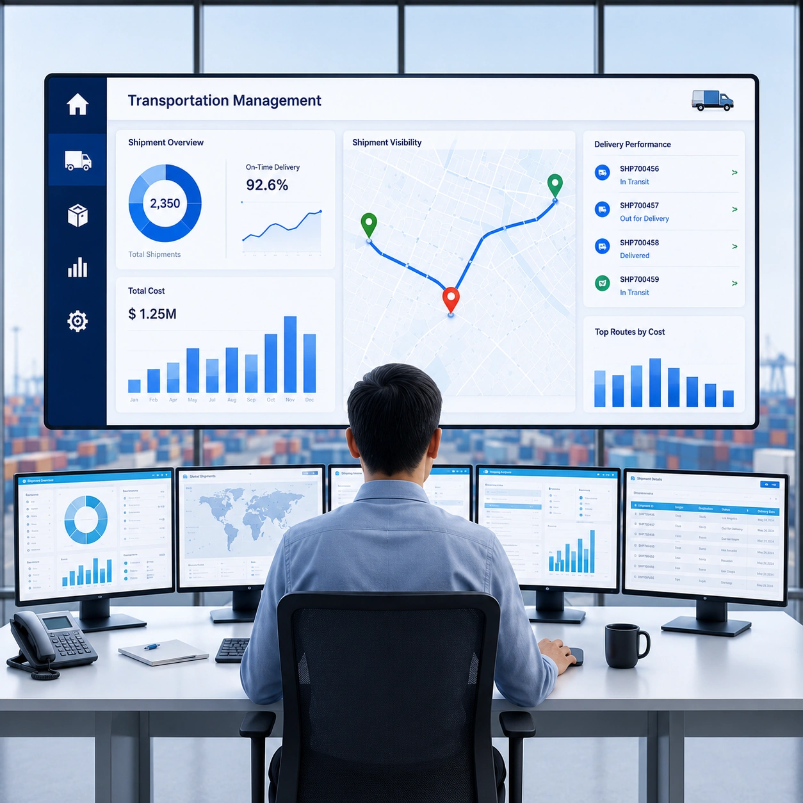
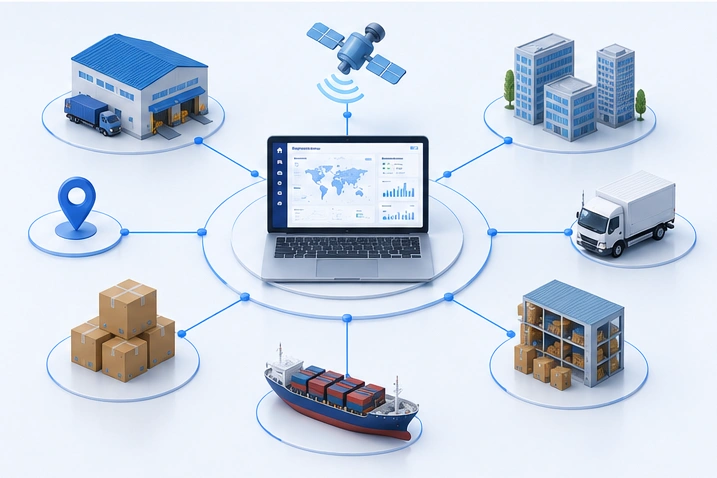

Manual Transportation Planning
Time-consuming processes increase errors and reduce operational efficiency.

An AI-Powered Transportation Management System (TMS) is a cloud-based software solution that helps businesses plan, execute, track, and optimize transportation operations from a single platform.
It automates shipment planning, route optimization, fleet and carrier management, freight operations, and real-time shipment tracking using AI-driven insights and intelligent automation.
AngelTech Logistics' Transportation Management Software enables businesses to reduce transportation costs, improve delivery performance, gain end-to-end transportation visibility, and make smarter decisions with AI-powered automation.
By seamlessly integrating with ERP, WMS, GPS, and other business systems, it helps enterprises streamline logistics operations, improve operational efficiency, and enhance overall supply chain performance.
As logistics operations grow, managing transportation through spreadsheets, manual workflows, and disconnected systems becomes inefficient and costly. AngelTech Logistics uses Artificial Intelligence (AI) and Machine Learning (ML) to automate transportation operations, optimize planning, reduce costs, and provide real-time transportation intelligence across the supply chain.
Time-consuming processes increase errors and reduce operational efficiency.
Automatically plan and schedule shipments based on delivery priorities, vehicle capacity, and available resources using AI-powered optimization.
Inefficient routes, underutilized fleets, and poor freight planning lead to higher logistics expenses.
Identify the fastest and most cost-effective routes to reduce fuel consumption, transportation costs, and improve on-time deliveries.
Lack of real-time shipment tracking makes it difficult to monitor deliveries and respond to delays.
Gain real-time transportation insights with intelligent dashboards, predictive reports, and shipment visibility across the supply chain.
Poor route planning increases fuel consumption, travel time, and delivery delays.
Predict delays and transportation disruptions before they occur and proactively optimize delivery schedules.
Managing multiple carriers and vehicles without centralized control impacts service quality and productivity.
Maximize fleet utilization, reduce idle time, improve vehicle performance, and optimize carrier allocation.
Without analytics, businesses cannot effectively monitor transportation KPIs, optimize operations, or make data-driven decisions.
Gain real-time insights with intelligent dashboards, transportation KPIs, predictive reports, and AI-driven demand forecasting for better planning decisions.
AngelTech Logistics' AI-Powered Transportation Management Software simplifies and automates every stage of your transportation operations. From transportation planning and execution to shipment tracking, fleet management, and logistics analytics, our centralized platform helps businesses improve operational efficiency, reduce transportation costs, and gain complete transportation visibility across the supply chain.

Automate shipment planning, vehicle allocation, and dispatch processes to improve delivery speed, optimize resources, and streamline transportation execution.
Leverage AI to identify the most efficient delivery routes based on traffic, distance, and vehicle capacity while reducing fuel costs and improving on-time deliveries.
Monitor vehicle availability, maintenance schedules, driver performance, and fleet utilization through a centralized transportation dashboard.
Manage multiple carriers, compare performance, optimize freight rates, and streamline carrier selection for reliable and cost-effective transportation.
Track shipments from dispatch to delivery with real-time status updates, proof of delivery, automated notifications, and complete shipment visibility.
Monitor every shipment with GPS-enabled tracking, accurate ETAs, instant delay alerts, and live transportation visibility.
Control freight expenses through automated cost tracking, carrier comparison, budgeting, and transportation cost analysis to improve profitability.
Access AI-powered dashboards with real-time insights into transportation costs, fleet performance, delivery KPIs, carrier efficiency, and shipment trends.
Manage road, rail, air, ocean, and intermodal transportation operations through a single platform for seamless logistics coordination.
Secure cloud-based Transportation Management Software with enterprise scalability, role-based access, ERP/WMS/GPS integrations, automatic updates, and anywhere access.
A collaborative, transparent, and agile approach to help transportation teams plan, execute, track, and optimize every shipment with intelligent automation.
Automatically import transportation orders from your ERP, WMS, CRM, or e-commerce platform.
Plan shipments based on delivery priorities, vehicle availability, capacity utilization, and destinations.
Identify faster, cost-effective routes to reduce transportation costs and improve on-time delivery.
Assign the best-fit vehicles and carriers automatically to improve fleet efficiency and control costs.
Dispatch digitally, track live shipment movement, capture PODs, and manage exceptions from one platform.
Turn transportation data into actionable dashboards, KPIs, reports, and continuous optimization insights.
Enhance your logistics operations with seamless system integrations. Our Transportation Management Software connects with your existing enterprise applications to automate data exchange, streamline workflows, improve operational visibility, and deliver a unified supply chain experience.
SAP, Oracle, Microsoft Dynamics, etc.
Order, inventory, and shipment data sync.
WMS integrations for fulfillment visibility.
Centralized collaboration across partners.
Live movement, ETA, and exception updates.
Self-service shipment visibility and updates.
Vehicle, carrier, and trip execution data.
BI dashboards for transport performance.
Customer service and sales visibility.
Flexible connectivity with external systems.
Billing, cost, and settlement data exchange.
Protect your logistics operations with a secure and reliable transportation platform built for enterprise businesses. AngelTech Logistics ensures your operational data remains protected through advanced security controls, compliance-ready architecture, and secure cloud infrastructure.
AngelTech Logistics' AI-Powered Transportation Management System (TMS) simplifies transportation planning, shipment tracking, route optimization, and logistics execution to reduce costs, improve visibility, and enhance supply chain performance.

Transform your logistics with the Best Transportation Management System India. AngelTech Logistics' AI-Powered Transportation Management System helps you automate transportation planning, improve shipment visibility, optimize fleet performance, and reduce operational costs—all from one intelligent platform.
Discover how smarter transportation management can drive efficiency, improve delivery performance, and accelerate your business growth.
A Transportation Management System is software that helps businesses plan, execute, monitor, and optimize transportation operations from order creation to final delivery.
AI automates transportation planning, recommends optimized routes, predicts delays, analyzes transportation data, and improves overall operational efficiency.
Yes. Our platform is designed for enterprises managing high shipment volumes, multiple locations, and complex transportation networks.
Yes. The system supports road, rail, air, ocean, and intermodal transportation operations from a single platform.
Yes. AngelTech Logistics integrates with leading ERP, WMS, GPS, CRM, accounting, and third-party business applications.
Yes. Businesses can monitor shipments through GPS-enabled live tracking, delivery status updates, and transportation dashboards.
Manufacturing, automotive, retail, FMCG, pharmaceuticals, food & beverage, logistics providers, distributors, wholesalers, and many other industries.
Yes. AngelTech Logistics is a secure SaaS Transportation Management Software that can be accessed anytime from anywhere.